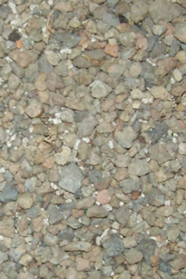
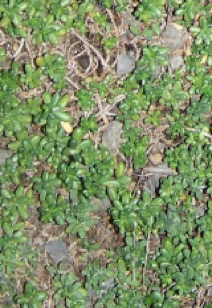
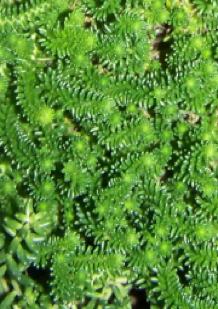

Influence of plant coverage on the total green roof energy balance and building energy consumption

Bare Soil

Partial Coverage

Full Coverage
Featured April 4th 2016
Major Findings: Implementation of our green roof model into EnergyPlus showed importance of the plant coverage rate for the total daily received radiative flux. Specifically, the radiative flux is reduced by 32% when comparing
the bare soil and fully covered green roofs. Importantly, our model enables building energy consumption calculations with the radiative flux depending on the coverage rate in actual green roofs.
By:
Neda Yaghoobian, and Jelena Srebric
2016
Heidarinejad, M., Dahlhausen, M., Mattise, N., Sharma, K., Benne, K., Macumber, D., and Srebric, J. 2016. “Demonstration of Reduced-Order Urban Scale Building Energy Simulations,” under review in Applied Energy.
Kim, Y.S., and Srebric, J. 2016. “Impact of occupancy rates on the building electricity consumption in commercial buildings,” under review in Energy and Buildings.
Chen, X., Wang, Q., and Srebric, J. 2016. “Occupant feedback based model predictive control for thermal comfort and energy optimization: A chamber experimental evaluation,” Applied Energy, 164(2016): 341–351.
Gangisetti, K., Claridge, D., Srebric, J., and Paulus, M. 2016. “Influence of Reduced VAV Flow Settings on Indoor Thermal Comfort in an Office Space,” Building Simulation Journal, 9(2016): 101-111.
2015
Han, G., and Srebric, J. 2015. “Comparison of Survey and Numerical Sensitivity Analysis Results to Assess the Role of Life Cycle Analyses from Building Designers’ Perspectives,” Energy and Buildings, 108(2015): 463-469.
Dahlhausen, M., Heidarinejad, M.,and Srebric, J., 2015. “Building Energy Retrofits under Capital Constraints and Greenhouse Gas Pricing Scenarios,” Energy and Buildings, 107(2015): 407-416.
Zhao, M., Kim, Y.S., and Srebric, J. 2015. “Occupant Perceptions and a Health Outcome in Retail Stores,” Building and Environment, 93/2(2015): 385-394.
Yaghoobian, N., Srebric, J. 2015. “Influence of Plant Coverage on the Total Green Roof Energy Balance and Building Energy Consumption,” Energy and Buildings, 103(2015): 1-13.
Chen, X., Wang, Q., and Srebric, J. 2015. “Model Predictive Control for Indoor Thermal Comfort and Energy Optimization Using Occupant Feedback,” Energy and Buildings, 102(2015): 357-369.
Jareemit, D.,and Srebric, J. 2015. “A Characterization of Time-Dependent Air Infiltration Rates in Retail Stores Using Calibrated Multi-zone Model,” Science and Technology for the Built Environment, 21(4): 420-428.
Srebric, J., Heidarinejad,M., Liu, J. 2015. “Building Neighborhood Emerging Properties and their Impacts on Multi-Scale Modeling of Building Energy and Airflows,” Building and Environment, 91(2015): 246-262.
Liu, J., Heidarinejad, M., Gracik, S., Srebric,J., and Yu, N. 2015. “An indirect validation of convective heat transfer coefficients (CHTCs) for external building surfaces in an actual urban environment,” Building Simulation Journal, 2015(8): 337-352.
Zhao, M., Srebric, J.,Berghage, R., Dressler K., 2015. “Accumulated Snow Layer Influence on the Heat Transfer Process through Green Roof Assemblies,” Building and Environment, 87(2015): 82-91.
Chen, X., Wang, Q., and Srebric, J. 2015. “A Data-driven State-space Model of Indoor Thermal Sensation Using Occupant Feedback for Low-Energy Buildings,” Energy and Buildings, 91(2015): 187-198.
Pitchurov, G., Srebric, J., Zhu, S., Vincent R.L., Rudnick, S.N., and Brickner P.W. 2015.“A Validated Numerical Investigation of the Ceiling Fan's Role in the Upper-Room UVGI Efficacy,” Building and Environment, 86(2015): 109-119.
Liu, J., Heidarinejad, M., Gracik, S., and Srebric, J. 2015. “The impact of exterior surface convective heat transfer coefficients on the building energy consumption in urban neighborhoods with different plan area densities,” Energy and Buildings, 86(2015): 449-463.
Han, G., Srebric, J., and Enache-Pommer, E. 2015. “Different Modeling Strategies of Infiltration Rates for an Office Building to Improve Accuracy of Building Energy Simulations,” Energy and Buildings, 86(2015): 288-295.
Gracik, S., Heidarinejad, M., Liu, J., Srebric, J. 2015. “Effect of Urban Neighborhoods on the Performance of Building Cooling Systems,” Building and Environment, 90(2015): 15-29.
Kim, Y.S., and Srebric, J. 2015. “Improvement of Building Energy Simulation Accuracy with Occupancy Schedules derived from Hourly Building Electricity Consumption,” ASHRAE Transactions, 121(1): 353-360.
Liu, J., Heidarinejad, M., Guo, M., and Srebric, J. 2015. “Numerical Evaluation of the Local Weather Data Impacts on Cooling Energy Useof Buildings in an Urban Area,” Procedia Engineering, 121(2015): 381-388.
Heidarinejad, M., Dahlhausen, M., and Srebric, J. 2014. “Cluster Analysis of Simulated Energy Use for LEED Certified U.S. Office Buildings,” Energy and Buildings, 85(2014): 86–97.
Han, G., Srebric, J., and Enache-Pommer, E. 2014. “Variability of Optimal Solutions for Building Components Based on Comprehensive Life Cycle Cost Analysis,” Energy and Buildings, 79(2014): 223-231.
Jareemit, D., Shu, S., and Srebric, S. 2014. “A field investigation of air infiltration rates through automatic entrance doors in retail buildings,” BUILT, International Journal of Building, Urban, Interior, and Landscape Technology, 2014(4): 51–59.
Davidovic, D., Liu, J., Heidarinejad, M., and Srebric, J. 2014. “Airflow Study for a Cluster of Campus Buildings using Different Turbulence Modeling Approaches,” BUILT, International Journal of Building, Urban, Interior and Landscape Technology, 2014(3): 33-56.
Zhao, M., Tabares-Velasco, P.C., Srebric, J.,Komareni, S., and Berghage, R. 2014. “Effects of plant and substrate selection on thermal performance of green roofs during the summer,” Energy and Buildings, 78(2014): 199-211.
Zaataria, M., Nirloa, E., Jareemit, D., Craina, N.,Srebric, J., and Siegel, J. 2014. “Ventilation and Indoor Air Quality in Retail Stores: A Critical Review (RP-1596),” Science and Technology for the Built Environment, 20(2014): 276-294.
Zhu, S., Srebric, J., Rudnick, S.N., Vincent,R.L., and Nardell, E.A. 2014. “Numerical modeling of indoor environment with a ceiling fan and an upper-room ultraviolet germicidal irradiation system,” Building and Environment, 72(2014): 116-124.
2013
Liu, J., Srebric, J., and Yu, N. 2013. “Numerical simulation of convective heat transfer coefficients at the external surfaces of building arrays immersed in a turbulent boundary layer,” Int. Journal of Heat and Mass Transfer, 61(2013): 209-225.
Zhu,S., Srebric, J., Rudnick, S.N., Vincent, R.L., and Nardell, E.A. 2013. “Numerical Investigation of Upper-Room UVGI Disinfection Efficacy in an Environmental Chamber with a Ceiling Fan,” Photochemistry and Photobiology, 89(4): 782-791.
Heidarinejad, M., and Srebric, J. 2013. “Computational Fluid Dynamics Modeling of UR-UVGI Lamp Effectiveness to Promote Disinfection of Airborne Microorganisms,” invited paper for a special issue on “Technological Advancements That Improve or Enhance Energy Efficiency in Healthcare Facilities” World Review of Science, Technology and Sustainable Development (WRSTSD), 10(2013): 78-95.
2012
Zhao, M., and Srebric, J. 2012. “Assessment of green roof performance for sustainable buildings under winter weather conditions,” Journal of Central South University, 19(2012): 639-644.
Tabares-Velasco, P.C., Zhao, M., Peterson, N., Berghage, R., and Srebric, J. 2012. “Validation of Predictive Heat and Mass Transfer Green Roof Model with Extensive Green Roof Field Data,” Ecological Engineering, 47(2012): 165-173.
Tabares-Velasco, P.C., and Srebric, J. 2012. “A heat transfer model for assessment of plant based roofing systems in summer conditions,” Building and Environment, 49(2012): 310-323.
Davidovic, D., Pinon, J., Burnett, E.F., and Srebric, J. 2012. “Analytical Procedures For Estimating Air Flow Rates In Ventilated, Screened Wall Systems (VSWS),” Building and Environment, 47(2012): 126-137.
Zhu, S., Srebric, J., Spengler, J.D., and Demokritou, P. 2012. “An advanced numerical model for the assessment of airborne transmission of influenza in bus microenvironments,” Building and Environment, 47(2012): 67-75.
2011
Tabares-Velasco, P.C., and Srebric, J. 2011. “Experimental Quantification of Heat and Mass Transfer Process through a Vegetated Roof Assembly in a new Laboratory Setup,” Int. Journal of Heat and Mass Transfer, 54 (2011): 5149-5162.
Ayata, T., Tabares-Velasco, P.C., and Srebric, J. 2011. “An Investigation of Sensible Heat Fluxes at a Green Roof in a Laboratory Setup,” Building and Environment, 46(9): 1851-1861.
Khalajzadeh, V., Heidarinejad, G., and Srebric, J. 2011. “Parameters Optimization of a Vertical Ground Heat Exchanger Based on Response Surface Methodology,” Energy and Buildings, 43(6): 1288-1294.
2010
Y. Qian and J. Srebric 2010. "Development and Validation of An Algebraic Turbulence Model for Outdoor Airflow and Contaminant Simulations Around a Building", International Journal in Building, Urban, Interior and Landscape Technology
V. Vukovic, P.C. Tabares-Velasco and J. Srebric 2010. "Parameters Optimization of a Vertical Ground Heat Exchanger Based on Response Surface Methodology", Journal of the Air & Waste Management Association (#60 2010)
2009
Tabares-Velasco, P.C. and Srebric, J. 2009. “The Role of Plants in the Reduction of Heat Flux through Green Roofs: Laboratory Experiments” ASHRAE Transactions, 115(2): 793-802.
Yang, C., Yang, X., Xu, Y., and Srebric, J. 2009. “Contaminant dispersion with personal displacement ventilation Part I: baseline case study,” Building and Environment, 44(10): 2121-2128.
2008
Srebric, J., Yuan, J., and Novoselac, A. 2008. “In-Situ Experimental Validation of a Coupled Multi-zone and CFD Model for Building Contaminant Transport Simulations,” ASHRAE Transactions, 114(1): 273-281.
Srebric, J., Vukovic, V., He, G., and Yang, X. 2008. “CFD Boundary Conditions for Contaminant Dispersion, Heat Transfer, and Airflow Simulations around Human Occupants in Indoor Environments,” Building and Environment, 43(3): 294-303.
2007
Mansour, A., Srebric, J., and Burley, B.J. 2007. “Development of Straw-cement Composite Sustainable Building Material for Low-cost Housing in Egypt,” Journal of Applied Sciences Research, 3(11): 1571-1580.
Choi, J., Kim, Y., Sivasubramaniam, A., Srebric, J., Wang, Q., and Lee, Q. 2007. “A CDF-based Tool for Studying Temperature in Rack-mounted Servers” IEEE Transactions on Computers, 57(8): 1129-1142.
Vukovic, V., and Srebric, J. 2007. “Application of Neural Networks Trained with Multi-Zone Models for Fast and Accurate Detection of Contaminant Source Position in Buildings,” ASHRAE Transactions, 113(2): 154-162.
2006
Novoselac, A., Burley, B.J., and Srebric, J. 2006. “Development of New and Validation of Existing Convection Correlations for Rooms With Displacement Ventilation Systems,” Energy and Buildings, 38(3): 163-173.
Davidovic, D., Srebric, J, and Burnett E. 2006. “Modeling Convective Drying of Ventilated Wall Chambers in Building Enclosures,” International Journal of Thermal Sciences, 45(2): 180-189.
Novoselac, A., Burley, B.J. and Srebric, J. 2006. “New Convection Correlations for Cooled Ceiling Panels in Room with Mixed and Stratified Airflow,” Int. J. of HVAC&R Research, 12(2): 17 pages.
2005
He, G., Yang, X., and Srebric, J. 2005. “Removal of Contaminants Released from Room Surfaces by Displacement and Mixing Ventilation: Modeling and Validation,” Indoor Air: International Journal of Indoor Air, 15(5): 367-380.
He, G., Yang, X. and Srebric, J. 2005. “Effects of Source Type and Location on Contaminant Dispersion in a Displacement Ventilated Room,” ASHARE Transaction, 111(1): 646-652.
2004
Yang, X., Srebric, J., Li, X. and He, G. 2004. “Performance of Three Air Distribution Systems in VOC Removal from an Area Source,” Building and Environment, 39(11):1289-1299.
2003
Zhai, Z., Srebric, J. and Chen, Q. 2003. "Prediction and Control of Chemical and Biological Agent Dispersion in Buildings," Int. J. of Ventilation, 2(3): 251-264.
Novoselac, A. and Srebric, J. 2003. “Comparison of Air Exchange Efficiency and Contaminant Removal Effectiveness as IAQ Indices,” ASHRAE Transactions, 109(2): 339-349.
2002
Novoselac, A. and Srebric, J. 2002. "A Critical Review on the Performance and Design of Combined Cooled Ceiling and Displacement Ventilation Systems," Energy and Buildings, 34 (5): 497-509.
Srebric, J. and Chen, Q. 2002. "An Example of Verification, Validation, and Reporting of Indoor Environment CFD Analyses," ASHRAE Transactions, 108(2): 185-194.
Srebric, J. and Chen, Q. 2002. "Simplified Numerical Models for Complex Air Supply Diffusers," Int. J. of HVAC&R Research, 8(3): 277-294.
Chen, Q. and Srebric, J. 2002. "A Procedure for Verification, Validation, and Reporting of Indoor Environment CFD Analyses," Int. J. of HVAC&R Research, 8(2): 201-216.
2001
Tantasavasdi, C., Srebric, J., and Chen, Q. 2001. "Natural Ventilation Design for Houses in Thailand," Energy and Buildings, 33 (8): 815-824.
Srebric, J. and Chen, Q. 2001. "A Method of Test to Obtain Diffuser Data for CFD Modeling of Room Airflow," ASHRAE Transactions, 107(2): 108-116.
2000
Chen, Q. and Srebric, J. 2000. "Application of CFD Tools for Indoor and Outdoor Environment Design," Invited paper, Int. J. on Architectural Science, 1(1): 14-29.
Srebric, J., Chen, Q., and Glicksman, L.R. 2000. "A Coupled Airflow-and-Energy Simulation Program for Indoor Thermal Environment Studies," ASHRAE Transactions, 106(1): 465-476.
1999
Srebric, J., Chen, Q., and Glicksman, L.R. 1999. "Validation of a Zero-equation Turbulence Model for Complex Indoor Airflows," ASHRAE Transactions, 105(2): 414-427.